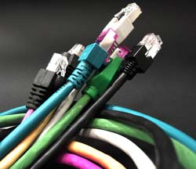

The magic that allows us to be in constant contact with the world is not as mystical as it may seem.
You zip into Starbucks looking for a latte and a Wi-Fi connection. Your MacBook does a little dance and connects so you can go online. But how does it actually work? What’s the magic?
Wi-Fi is actually very similar to a radio signal. All sound and data sent over the air uses waves. Waves can have different frequencies (how close together they are), amplitudes (how big they are), and phases (how they are aligned in time). Wi-Fi does the exact same thing as a radio by transmitting at a very distinct frequency.
"A computer's wireless adapter translates data into a radio signal and transmits it using an antenna. A wireless router receives the signal and decodes it. The router sends the information to the Internet using a physical, wired Ethernet connection. The process also works in reverse, with the router receiving information from the Internet, translating it into a radio signal and sending it to the computer's wireless adapter. The radios used for WiFi communication are very similar to the radios used for walkie-talkies, cell phones and other devices. They can transmit and receive radio waves, and they can convert 1s and 0s into radio waves and convert the radio waves back into 1s and 0s. But WiFi radios have a few notable differences from other radios: They transmit at frequencies of 2.4 GHz or 5 GHz. This frequency is considerably higher than the frequencies used for cell phones, walkie-talkies and televisions. The higher frequency allows the signal to carry more data."
How does your laptop know the difference between an FM radio signal and a Harry Potter download on Wi-Fi? It can tell the difference between the frequency of Wi-Fi, which is 2.4 or 5GHz (a gigahertz is a wave with a frequency of a billion cycles per second) and the much lower frequency of FM radio running at 88 to 108MHz (a megahertz is a wave with a frequency of a million cycles per second). Your laptop or phone “tunes” to the frequency of Wi-Fi in the same way your FM dial tunes to a radio station—only Wi-Fi can contain much more information than that old radio signal: a Radiohead album, pictures from your last vacation, the entire Stanley Kubrick movie library, and a few spam messages all at once.
A Wi-Fi signal transmits data through the air over a distance of 200 to 300 feet; the latest standard,802.11ac , runs at 1300 megabits-per-second, which is fast enough to transfer every Harry Potter movie in HD before you even finish a latte. That speed is the theoretical maximum, though; Internet download speeds run about five to 20 megabits-per-second or more depending on your service provider, so you might want to sip your latte.
Wi-Fi is also susceptible to interference. The microwave oven in your kitchen and a cordless phone are “tuned” to the same frequency as Wi-Fi, so if they're around, your Wi-Fi connection might suffer. The concrete slabs in a foundation, the walls at Starbucks, and even water can inhibit a Wi-Fi connection. That’s why, if you're getting a bad signal, you can usually move over to a different table or move away from that huge cement pillar to increase your throughput a little. Or move closer to the Wi-Fi router.
So, about that dance your computer does to connect to Wi-Fi. Wi-Fi is kinda fussy about who and what can join the party. Your laptop “negotiates” the connection in the same way a deal is closed: with a handshake. The antenna in your laptop starts reading the signal, figures out the wavelength, looks for any security encryption (in which case it will prompt you for a password), and then gives you the green light.
hank the overlords of Wi-Fi technology that they didn’t make it any more complicated. The simplicity of looking for a Wi-Fi signal from your laptop, phone, or tablet is what makes Wi-Fi so amazingly popular. Plus, it’s often free. Now to get Starbucks to make a cheaper latte!
Thanks to wireless chipmaker Broadcom (broadcom.com) for some engineering assistance.
Source: Brandon, John "How Does a Wi-Fi Signal Work?" September 17, 2014 - 9:30am. mentalfloss.com. http://mentalfloss.com/article/57916/how-does-wi-fi-signal-work 17 June 2015.
Still Curious? Here are some related links for more information.
- Similar Article: howstuffworks.com
- More Technical: i-programmer.info
- About Cellular LTE: androidauthority.com